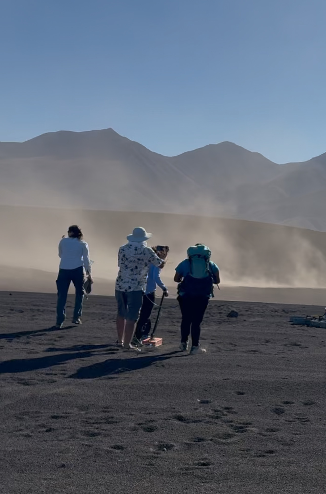
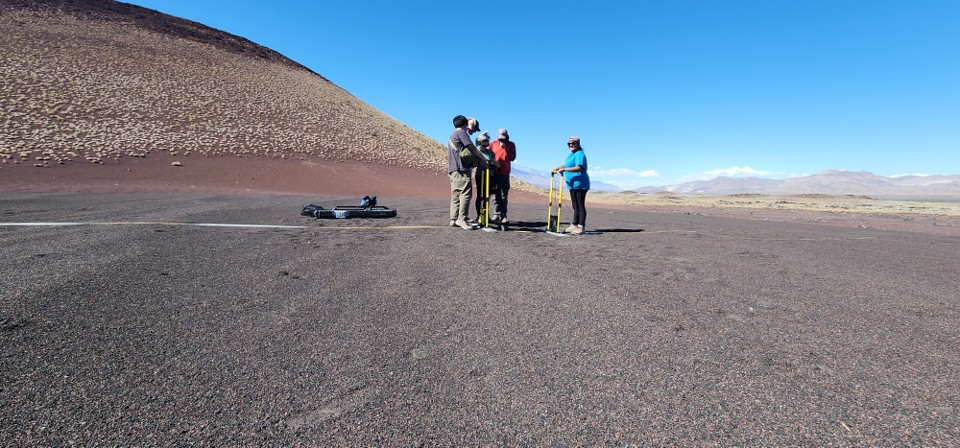
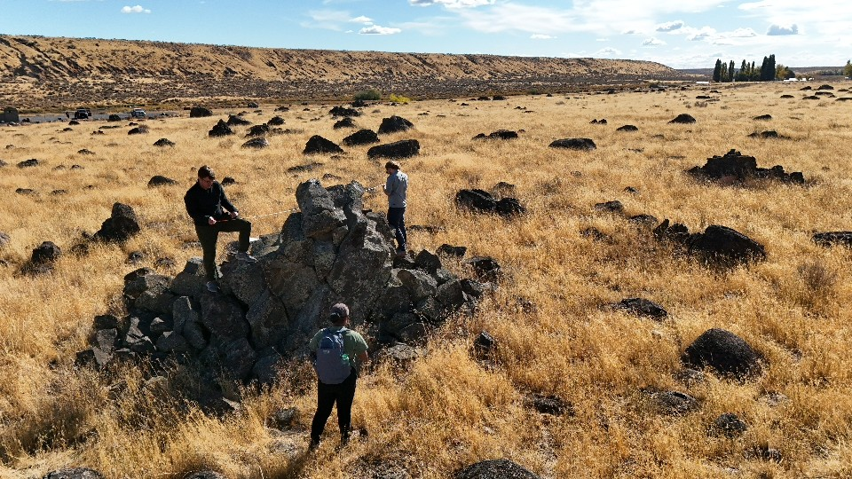

Christina Singh
Graduate Research Assistant | Planetary Science PhD Student
Graduate Research Assistant | Planetary Science PhD Student
Below are highlights from my geological field work experiences at terrestrial analog sites for planetary research:
Gravel dune field near Fossil Falls in Eastern Sierra Nevadas | October 2025


Conducting a GSSI survey (top) and CMP survey (bottom) of gravel dunes in the Eastern Sierras.
Field work at the Fossil Falls gravel dunes. Radar measurements were taken to study the internal structure of the dunes and identify cross bedding. Studying these features can help us understand the formation and migration of similar dunefields in Gale Crater, Mars. Field activities included:
Euphrata Fan Boulder Field | October 2024

Collecting measurements of boulder heights and diameters.
Geological field work at Euphrata Fan boulder field, Washington. Measuring boulders to ground truth GIS measurments and 3D products made in the lab. Analysis of these clasts will aid in computing flood magnitudes and serve as an analog to ancient megafloods on Mars. Field activities included:
I have participated in several other field campaigns focused on planetary analog research, including:
These field experiences have provided valuable context for interpreting remotely sensed data from Mars and other planetary bodies.
Email: christina@arizona.edu
GitHub: github.com/christinaysingh